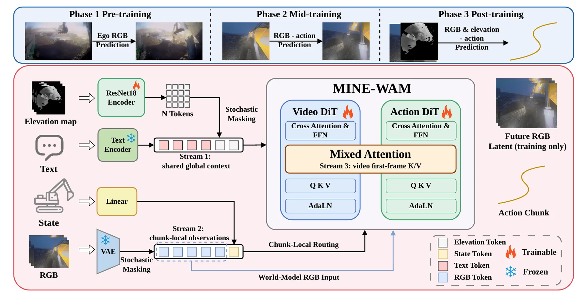
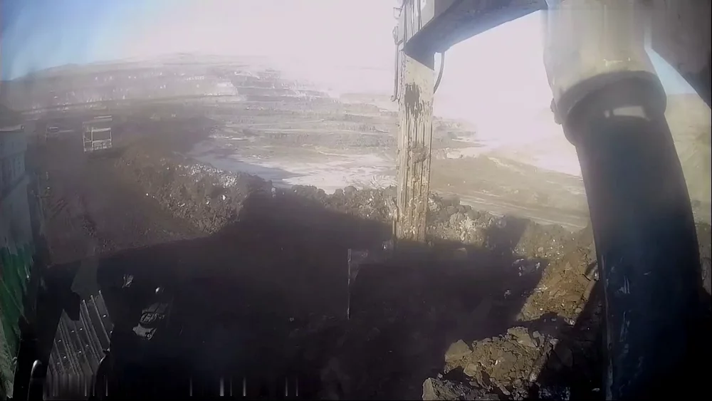
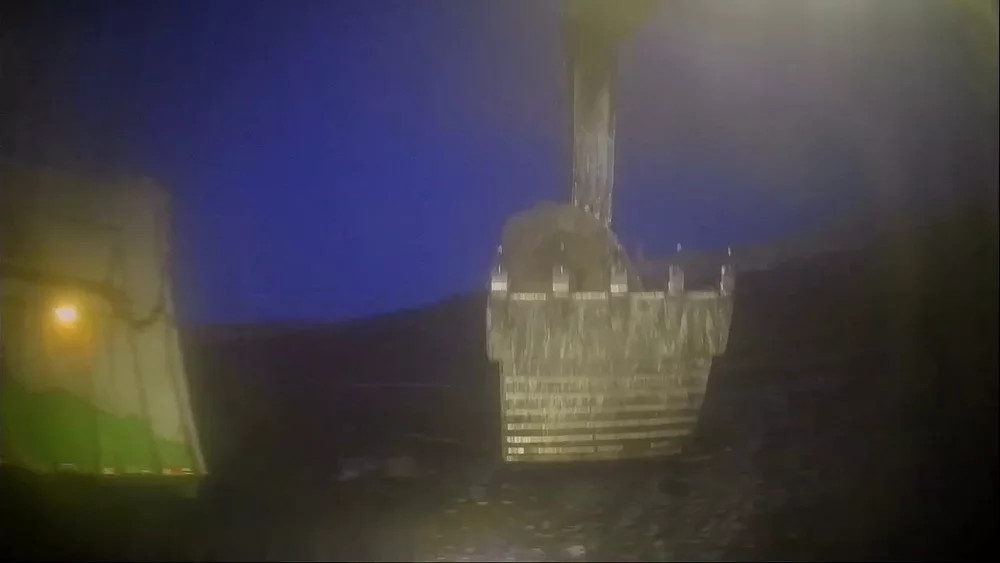
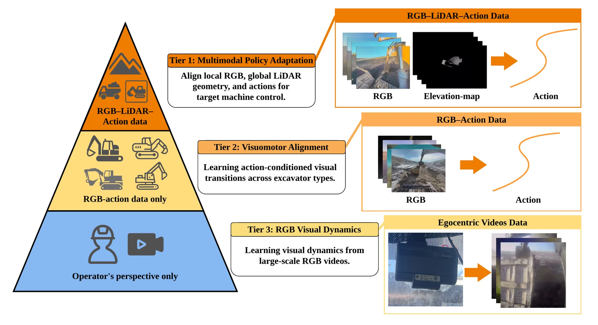
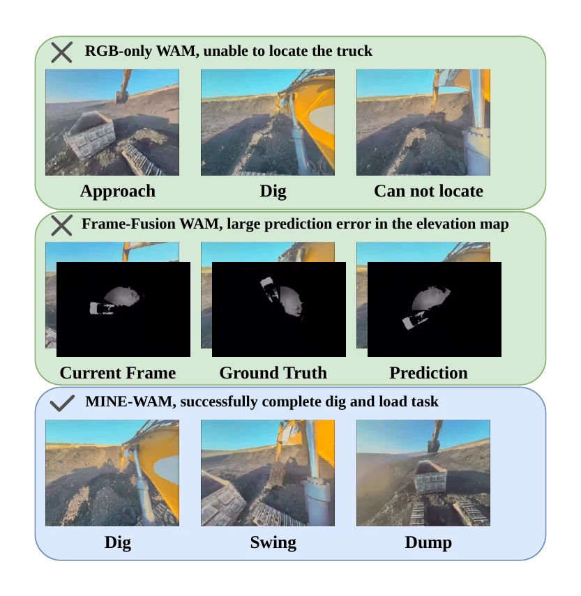

Shared global context
Task text and 49 spatial elevation tokens condition both experts.
Real-world autonomous loading
Large-scale field data
A glimpse across diverse excavator viewpoints, machines, illumination, and real-world worksite conditions.
The dataset will be released upon acceptance.
A visual mosaic sampled from large-scale excavator-operation footage used by the three-tier training recipe.
At a glance
Full-cycle loading with a full-size excavator remains difficult because deformable soil, changing pile geometry, and camera motion demand continuous adaptation in unstructured outdoor worksites. Existing World–Action Models were developed mainly for tabletop robots and rely primarily on RGB observations, which are vulnerable to occlusion, dust, glare, darkness, and limited field of view.
We develop MINE-WAM, a LiDAR–RGB Multimodal World–Action Model that combines local RGB observations with global geometry from LiDAR-derived elevation to learn full-cycle hydraulic control. Elevation is used as conditioning rather than as a video prediction target. A ResNet18 converts the elevation map into spatial tokens injected throughout the video and action experts, while mutually exclusive condition masking discourages either visual modality from dominating.
Training follows a data pyramid of 2,000 hours of operator-view video, 200 hours of RGB–action data, and 20 hours of target-machine RGB–LiDAR–action data. On a real full-size excavator, MINE-WAM achieves a 4% empty-bucket rate and an 18 s average time per bucket. Its embedded implementation produces an action chunk in 220 ms, an 8.5× compute speedup over the unoptimized implementation.
Architecture
MINE-WAM treats the elevation map as structural context rather than an image to be generated. Spatial elevation tokens condition every cross-attention layer of both experts, while RGB and proprioception remain time-varying observations.

Task text and 49 spatial elevation tokens condition both experts.
RGB and machine state provide causal, time-varying evidence to the action expert.
First-frame keys and values connect video understanding with action generation.
Why multimodal?


To our knowledge, the first LiDAR–RGB multimodal World–Action Model for excavators.
Separates global elevation context, chunk-local observations, and cross-expert visual context.
Closes the complete dig-to-dump loop on a 49-ton XCMG XE490DK excavator.
Data-efficient adaptation

Real-machine evaluation
Empty-bucket rate
100 cycles per methodAverage time per bucket
32 s for rule-based controlCompute per action chunk
Jetson AGX Orin, H = 16Compute speedup
Versus unoptimized execution| Method | Empty bucket | Time / bucket |
|---|---|---|
| Rule-based | 15% | 32 s |
| Diffusion Policy | 23% | 22 s |
| RGB-only WAM | 46% | 21 s |
| Frame-fusion WAM | 14% | 18 s |
| MINE-WAM w/o mask | 15% | 20 s |
| MINE-WAM | 4% | 18 s |

Presentation
A concise presentation of the autonomous loading task, MINE-WAM architecture, three-phase training recipe, multimodal observations, and onboard deployment.
Reference
The final citation will be added when the paper is publicly released.
This resource will be available shortly.